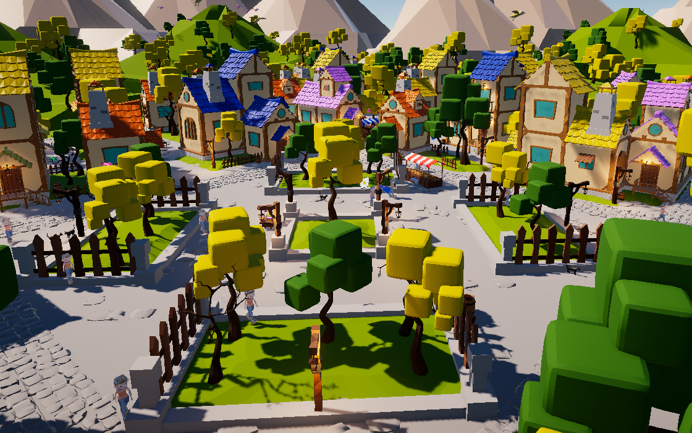

Introducción
Wicked Trivial es un juego de preguntas y respuestas ambientado en un mundo de brujería, donde los jugadores exploran su conocimiento sobre hechizos, criaturas mágicas, historia de la brujería, herbolaria y mucho más.
Con categorías que abarcan tanto aspectos históricos como representaciones en la cultura popular, los participantes deben responder correctamente para avanzar, superar retos y demostrar su dominio en el arte de lo oculto.
Con categorías que abarcan tanto aspectos históricos como representaciones en la cultura popular, los participantes deben responder correctamente para avanzar, superar retos y demostrar su dominio en el arte de lo oculto.
Disfruta de varias Categorias

En Wicked Trivial hay una gran variedad de categorias en la que poner a prueba tus conocimientos sobre brujería, a continuacion te los explicamos:
Historia de la Brujería: Viaja a través del tiempo y aprende sobre la evolución de la brujería y sus prácticas. Esta categoría abarca desde los juicios de brujas en la Edad Media hasta la popularización de la brujería en la cultura moderna. Descubre figuras históricas, eventos importantes y cómo ha cambiado la percepción de la magia a lo largo de los siglos.
Criaturas Mágicas: Explora la fascinante fauna de lo sobrenatural. Conoce a las criaturas míticas que habitan en los cuentos y leyendas de brujería, desde dragones y unicornios hasta duendes y espectros. Responde preguntas sobre sus características, hábitats y roles en la magia.
Herbología: Adéntrate en el mundo de las plantas y hierbas con propiedades mágicas. Conoce cómo se utilizan en hechizos, rituales y pociones. Responde preguntas sobre sus efectos, significados y cómo han sido empleadas por brujos y brujas a lo largo de la historia.
Brujería Pop: Explora cómo la brujería ha sido representada en la literatura, el cine y la televisión. Desde películas clásicas hasta series contemporáneas, esta categoría te desafiará a identificar personajes icónicos, tramas memorables y momentos mágicos que han dejado huella en la cultura popular.
Historia de la Brujería: Viaja a través del tiempo y aprende sobre la evolución de la brujería y sus prácticas. Esta categoría abarca desde los juicios de brujas en la Edad Media hasta la popularización de la brujería en la cultura moderna. Descubre figuras históricas, eventos importantes y cómo ha cambiado la percepción de la magia a lo largo de los siglos.
Criaturas Mágicas: Explora la fascinante fauna de lo sobrenatural. Conoce a las criaturas míticas que habitan en los cuentos y leyendas de brujería, desde dragones y unicornios hasta duendes y espectros. Responde preguntas sobre sus características, hábitats y roles en la magia.
Herbología: Adéntrate en el mundo de las plantas y hierbas con propiedades mágicas. Conoce cómo se utilizan en hechizos, rituales y pociones. Responde preguntas sobre sus efectos, significados y cómo han sido empleadas por brujos y brujas a lo largo de la historia.
Brujería Pop: Explora cómo la brujería ha sido representada en la literatura, el cine y la televisión. Desde películas clásicas hasta series contemporáneas, esta categoría te desafiará a identificar personajes icónicos, tramas memorables y momentos mágicos que han dejado huella en la cultura popular.

En Wicked Winds, tienes la libertad de personalizar a Ashen y adaptar su apariencia a tu estilo. Puedes cambiar el color de su cabello, ajustar el tono de su piel y seleccionar otros detalles que hagan único a este alegre brujito. La personalización permite que Ashen refleje tu propio toque mágico, dándole un aspecto especial mientras recorre la ciudad ayudando a sus habitantes.
¡Comienza a Jugar!
¿Estás listo para poner a prueba tus conocimientos sobre el fascinante mundo de la brujería? En Wicked Trivial, cada pregunta es un hechizo y cada respuesta, un paso hacia la victoria. Reúne a tus amigos, desafíalos y descubre quién es el verdadero maestro de la magia. ¡No te quedes fuera de esta aventura encantadora! ¡Juega ahora y desata tu poder en el tablero de Wicked Trivial!




Copyright © LoomLight 2024